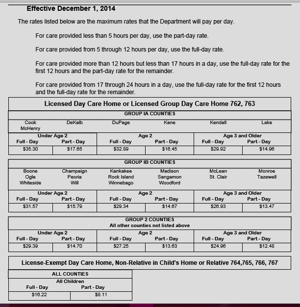

It Is so hard finding affordable babysitters nowadays so I decided to create a spot just for parents to be able to virtually visit, to locate affordable babysitters in their towns. I know absolutely nothing about the babysitters listed so please be advised to DO YOUR RESEARCH AND BACKGROUND CHECKS, or whatever security check you feel is necessary to make sure your children are safe and sent to a good babysitter.

Because everything is already hard enough on parents all information is free and open for parents to be able to have easy access to fining the babysitter that they need
Full-time Babysitting page 1 Part-Time Babysitting page 2 Date-Night/ Miscellaneous page 3